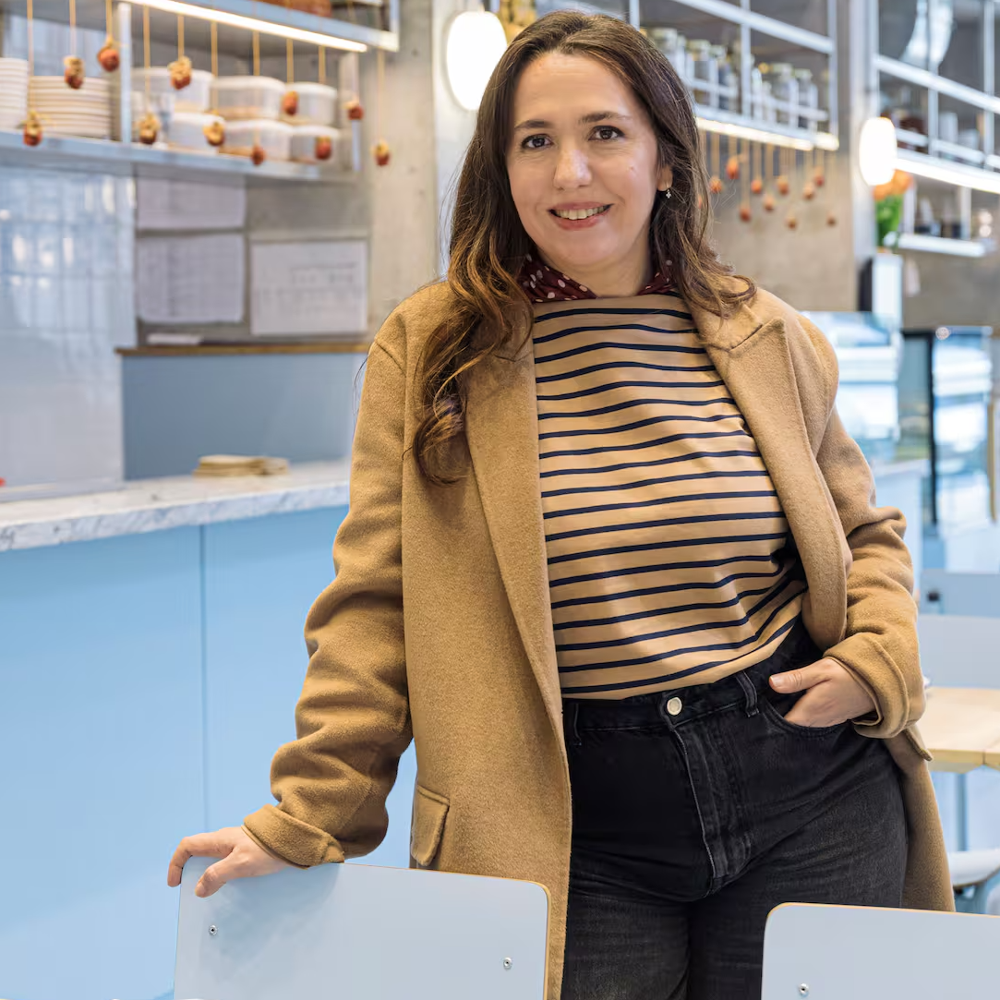

Narda Lepes
Chef y Presentadora de televisión argentina
Narda Lepes es una destacada chef, autora y presentadora de televisión argentina, nacida en Buenos Aires en 1972. Con una carrera que incluye trabajos en prestigiosos restaurantes y programas televisivos como "Narda, Comedor", Lepes se ha ganado reconocimiento por su enfoque innovador y creativo en la cocina. Es conocida por promover la alimentación saludable, el uso de ingredientes frescos y de temporada, y su compromiso con la sostenibilidad, lo que ha influido significativamente en la gastronomía de América Latina.


Comedor Diario
Restaurante